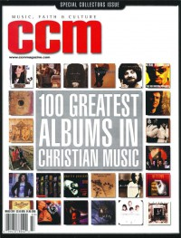

CMnexus
: Contemporary Christian culture, music, and media.
|
|
CCM, Mar 2001, vol. 23, iss. 9
| Cover |
|---|
|  | | Writers in this Issue |
|---|
Aldridge-McNeece, Sarah
Baldwin, Rick
Black, Beau
Chamberlain, Jerry
Collins, Stacie Kish
Farris, Christina
Fischer, John
Gillespie, Natalie Nichols
Hefner, April
Hendricks, Shawn
McCreary, David
Nentwig, Wendy Lee
Newcomb, Brian Quincy
Rabey, Steve
Riddle, Melissa
Rumburg, Gregory J
Thompson, John J.
Urbanski, Dave
Warren, Lindy
|
100 Greatest AlbumsCover Feature:Article:
- "Sarah Plain & Tall" by Melissa Riddle
- "Back to the Future" by John J. Thompson
On The Beat:
- "The Next Generation" by Sarah Aldridge-McNeece, Gregory J Rumburg
- "Voice For The Voiceless" by Beau Black
- "Women Snag Top Honors at the Stellars" by Stacie Kish Collins
Talent Pool:Story Behind the Song:
- "God of Wonders" by Christina Farris
On The Beat / Indies:What's New:
- Mitch McVicker - Chasing the Horizon by Christina Farris
- Greg Long - Now by David McCreary
- Steve Bell - Simple Songs by Brian Quincy Newcomb
- Sarah Masen - The Dreamlife of Angels by Wendy Lee Nentwig
- Kate Miner - Wandering Strange by April Hefner
- Zao - (Self-Titled) by Brian Quincy Newcomb
- Blenderhead - Figureheads on the Forefront of Pop Culture by Dave Urbanski
- Kurt Carr - Awesome Wonder by Stacie Kish Collins
- Jeff Johnson - A Quiet Knowing: Canticles for the Heart by Beau Black
- Bryan Duncan - Joy Ride by David McCreary
In Concert:
- "TD Waterhouse Center, Orlando, FL" by Natalie Nichols Gillespie
Book Review:Outta Toon:Consider This:
- "God on the Loose" by John Fischer
|
|